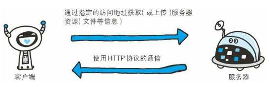
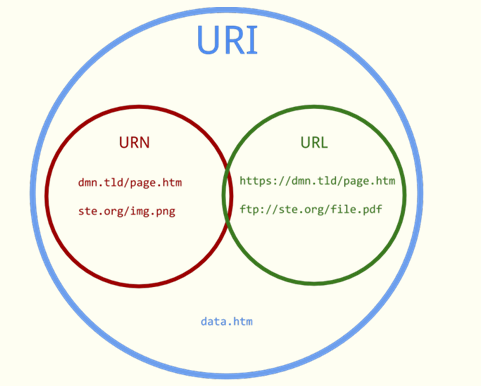
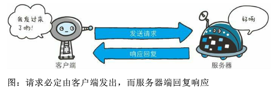
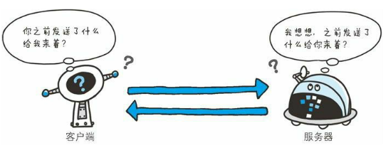
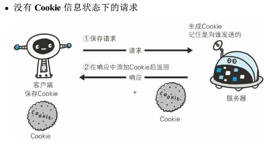
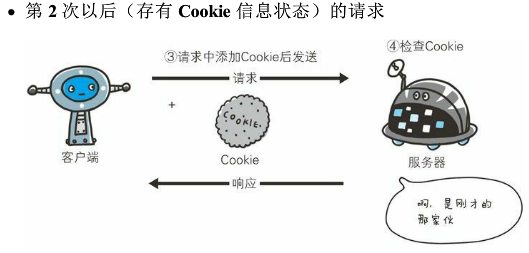
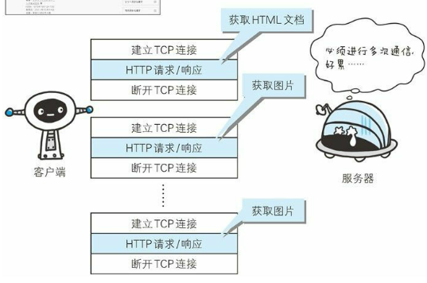
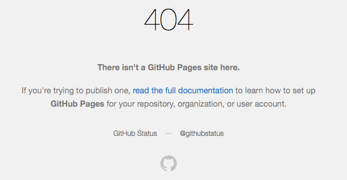
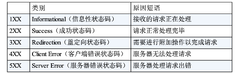

前言
之前在学习javaEE相关的javaWeb技术的时候，发现自己对HTTP协议的了解太缺乏了，导致看起书来“香菇，难受”，于是花了一点时间学习了HTTP协议，当时也没有很详细去了解细节。现在过了几个星期，是时候写篇博客复习一下了。
什么是http？
可以这么说，只要是上过网的人都接触过http协议。我们每天都会通过浏览器（Web browser）来访问网页的信息，过程再熟悉不过了：首先在浏览器地址栏输入URL(Uniform Resource Identifier)，也就是我们常说的网址，如果访问的网址是正确的且允许访问的，那么我们就可以得到网页信息了。

如图中所示的过程，客户端(Web browser)与所要访问的互联网资源(resource)所在的服务器(Server)是使用http协议来交换信息的。那么，什么是通信协议呢？打个比方，在中国人与人之间的“通信协议”是中文，在那些English speaking countries的人们则是用英文交流。中文与英文就好比是不同地区人们的“通信协议”。同样的道理，在互联网上每天都有大量的数据信息在交换，通信协议的重要性不言而喻。我们介绍的Http协议正是Web服务器与Web客服端之间的顶层通信协议之一，也是我们作为互联网使用者最常见的协议。
HTTP:HyperText Transfer Protocol , 超文本传输协议
什么是超文本?简单的说,超文本是一种可以链接到任何其他信息的文本。我们知道，网页本质来说就是一种超文本(HTML,HyperText Markup Language)，浏览器的作用就是解析并且渲染来自服务器端传来的HTML页面，最后呈现给我们看。顾名思义，http协议正是这个传输过程的关键所在。
计算机网络协议体系
计算机与网络设备要相互通信，双方就必须基于相同的方法。比如，如何探测到通信目标，由哪一边先发起通信，使用哪种语言进行通信，怎样结束通信等规则都需要事先确定。不同的硬件，操作系统之间的通信，所有的这一切都需要一种规则。而我们就把这种规则称为协议(protocol)。
在介绍http协议之前，先要了解一下整个互联网的协议体系。我们通常使用的网络(包括互联网)是在TCP/IP协议族的基础上运行的，而http协议只是属于它内部的一个子集。
整个网络通信过程需要制定规则的内容太多了， 从电缆的规格到IP地址的选定方法，寻找异地用户的方法，双方建立通信的顺序，以及Web页面显示需要处理的步骤，等等。如果互联网只是由一个协议统筹，某个地方需要改变设计的时候，就必须把所遇部分整体替换掉。显然，这种设计很愚蠢。
TCP/IP协议族采用分层管理，通常按层次分别为以下4层：应用层，传输层，网络层和数据链路层。如果我们能把各层之间的接口部分规划合理，每个层次内部的设计就封装独立起来了。层次化之后，设计也变得相对简单了。比如，处于应用层上的协议可以只考虑分派给自己的任务，而不需要弄清通信对方在地球的哪个地方，通信过程的传输路线是怎样的，以及信息能否确保送达等问题。这些都是应用层以下其他层次需要考虑的问题，对应用层来说是透明的，直接调用结果就可以。
TCP/IP协议族各层的作用如下：
1.应用层
应用层决定了向用户提供应用服务时的通信的活动。比如，FTP(File Transfer Protocol,文件传输协议)和 DNS(Domain Name System,域名系统)。HTTP协议也位于应用层。
2.传输层
传输层对上层应用层，提供处于网络连接中的两台计算机之间的数据传输。主要有两个性质不同的协议：TCP(Transmission Control Protocol,传输控制协议)和UDP(User Data Protocol,用户数据协议)。其中TCP协议提供可靠的数据传输，而UDP协议不提供可靠的数据传输。
3.网络层
网络层用来处理在网络上流动的数据包，该层规定了具体通过怎样的录像(所谓的传输路线)到达指定的计算机，并把数据包传送给对方。
4.数据链路层
用来处理连接网络的硬件部分，硬件上的范畴均在数据链路层的作用范围之内。
经典的TCP/IP通信传输过程：

利用TCP/IP协议族进行网络通信时，会通过分层顺序与对方进行通信。发送端从应用层往下走，接受端则往应用层上走。
这里我们简单介绍了计算机网络协议体系，具体的TCP/IP协议族的内容可以参考《TCP/IP详解，卷1》。
URI和URL的区别
与URI(Uniform Resource Identifier,统一资源标识符)相比，我们其实更加熟悉URL(Uniform Resource Location,统一资源定位符)。URL正是使用的Web浏览器访问Web页面时需要输入的网页地址。比如，图中的https://lujunqiu.github.io就是URL。
URI可以分为URL(uniform resource locator，统一资源定位器),URN(uniform resource name，统一资源命名)或同时具备locators 和names特性的一个东西。URN作用就好像一个人的名字，URL就像一个人的地址。换句话说：URN确定了东西的身份，URL提供了找到它的方式。
他们之间的关系：URI是以一种抽象的，高层次概念定义统一资源标识，而URL和URN则是具体的资源标识的方式。URL和URN都是一种URI。如图所示，

简单的http协议
这里我们介绍的http协议是基于HTTP/1.1版本，可能与现行主流的版本不一致，但是大同小异。
http协议规定，请求从客服端发出，最后服务器端响应该请求并返回。换句话说，肯定是从客服端开始建立通信的，服务器端在没有接收到请求之前不会发送响应。

接下来，通过一个具体http通信示例来了解http协议。

客服端的发送的是请求报文，服务器端收到请求报文解析之后返回响应报文。
请求报文的起始行的GET表示请求访问服务器的类型，称为方法(method)。随后的HTTP/1.1，即HTTP的版本号，用来提示客服端使用的HTTP协议功能。最后的Host:hackr.jp表示客服端想要访问的服务器的域名。
响应报文的起始行的HTTP/1.1 表示服务器对应的HTTP版本。接着就是200 OK 表示请求的处理结果的状态码(status code)和原因短语，这个稍后会介绍。下一行显示了创建响应的时间，然后就是响应资源主体的长度以及响应内容的文本类型。
请求报文与响应报文各个字段功能介绍的过于繁琐，这里不再啰嗦拉，可以参考《HTTP权威指南》，绝对是经典中的经典。
http是不保存状态的协议
HTTP协议是一种不保存状态，即无状态(stateless)协议。HTTP协议自身不对请求和响应之间的通信状态进行保存，每当有新的请求发送时，就会有对应的新的响应产生。专业一点来说就是，在HTTP这个级别，协议对于发送过的请求或响应都不做持久化处理。不可否认，无状态协议有它的优点。由于不必保存状态，自然可减少服务器的CPU及内存资源的消耗。从另一个侧面来说，也正是因为HTTP协议本身是非常简答的，所以才会被应用在各种场景里。

这时候你可能要怀疑了，平时在浏览网页的时候，比如当你登录了淘宝，即使在你关闭浏览器一会之后再访问淘宝时，你的登录状态仍然正常，很明显这里保存了之前的登录状态啊。没错，HTTP协议的确是无状态协议，淘宝服务器的确保存了你的登录状态。这是如何做到的呢？答案就是Cookie技术，将Cookie技术与HTTP协议结合起来，就可以做到状态管理。
Cookie技术通过在请求和响应报文中写入Cookie信息来控制客户端的状态。Cookie会根据从服务器端发送的响应报文内的一个叫做Set-Cookie的首部字段信息，通知客户端保存Cookie。当下次客户端再往该服务器发送请求时，客户端会自动在请求报文中加入Cookie值后发送出去。
服务器端发现客户端发送过来的Cookie厚，会去检查究竟是从哪个客户端发来的连接请求，然后对比服务器上的记录，最后就可以得到之前的状态信息。
如图所示：


http的keep-alive方法
http的初始版本中，每进行一次http通信就要断开一次tcp连接。随着http的普及，在使用浏览器浏览一个包含多张图片的HTML网页时，在发送请求访问HTML网页资源的同时也会请求网页内包含的其他资源。因此，每次的请求都会造成无谓的tcp连接的建立和断开，增加通信量的开销。

在后续的HTTP版本中提出了持久连接的观点，也就是keep-alive方法，只要任意一端没有明确提出断开连接，则保持tcp连接状态。这样一来，减少了tcp连接的重复建立和断开所造成的额外开销，减轻了服务器端的负载，提高了Web页面的访问速度。
http状态码
大家肯定遇到过在访问网页的时候返回一个404 not found。是的，每次看到这个东西就很生气。最后我们来看一看404这些状态码到底是什么意思。

状态码的职责是当客户端向服务器发送请求时，描述返回的请求结果。借助状态码，用户可以知道服务器端是正常处理了请求，还是出现了错误。
状态码的类别如图：

这里介绍几个常见的状态码：
- 200 OK :表示从客户端发来的请求在服务器端被正常处理了；
- 301 Moved Permanently :永久性重定向，表示请求的资源已被分配了新的URI；
- 302 Found :临时性重定向，希望用户(本次)能使用新的URI访问；
- 403 Forbidden :表明对请求资源的访问被服务器拒绝了；
- 404 Not Found :表明服务器上无法找到请求的资源；
- 503 Service Unavailable :表明服务器暂时处于超负载或正在进行停机维护，现在无法处理请求；
最后
这篇文章只是简单的介绍了http协议，并没有深入。协议本身其实挺枯燥的，真是写者痛苦，看者难受。如果大家注意到了的话，近几年很多网站都在使用https协议，关于https协议我会在以后更新，说实话https协议的SSL握手过程还是有点意思的。